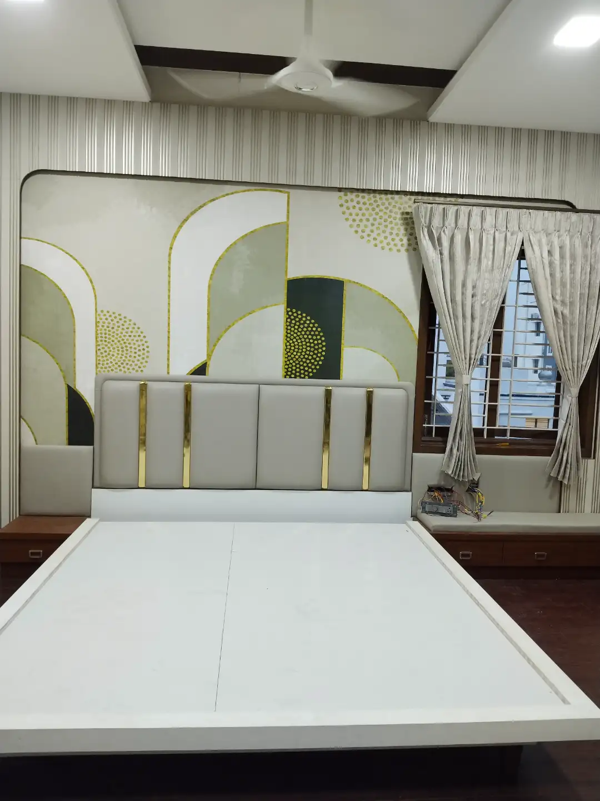

Upholstered Headboards
Plush, tailored headboards that become the bedroom's focal point.
Catchy Decors designs and installs custom upholstered headboards, panel headboards and coordinated cushions for bedrooms across Karur — built to your bed size and chosen fabric.
Made to measure, expertly installed across Karur town and nearby areas.

Plush, tailored headboards that become the bedroom's focal point.

Structured, textured designs for a more contemporary bedroom.

Custom-made accent cushions to tie your room's colours together.

Headboards paired with matching curtains and cushions for a complete, put-together bedroom.

Choose your fabric, tufting style and dimensions — built to fit your exact bed frame.
Every headboard is made to the exact dimensions of your bed frame, not a standard size.
We help coordinate headboard, cushion and curtain fabric so the bedroom feels designed, not assembled.
Installation is included so your headboard is properly mounted and secure.
We design and fit custom headboards and cushions for bedrooms across Karur. We visit your home for free measurement and design consultation, then handle fabrication and installation from our Karur studio — for Karur town, Thanthonimalai, Vengamedu, Vaiyapuri Nagar, Kamarajapuram, Andankoil, Aravakurichi, Kulithalai, Pugalur and Pallapatti.
What Karur homeowners ask us most
Yes, every headboard is made to measure for your bed frame, with a wide range of fabric and tufting options.
Yes, we coordinate headboard, cushion and curtain fabric for a cohesive bedroom look.
Yes, we make custom accent cushions to match your headboard and room colours.
Most headboards are fabricated and installed within a few days of finalising your design.
We’ll help coordinate it with your curtains and cushions.
Ask for a consultation →